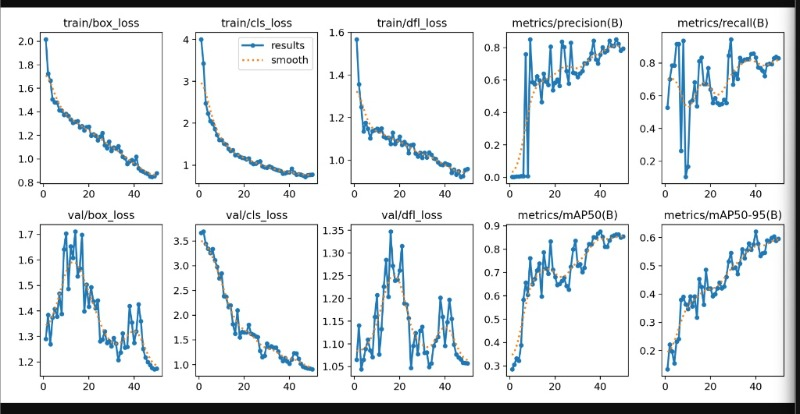
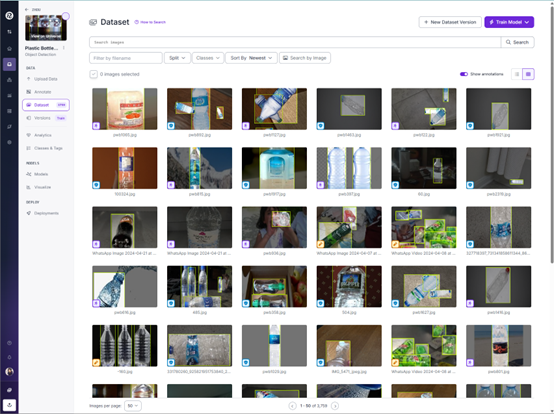
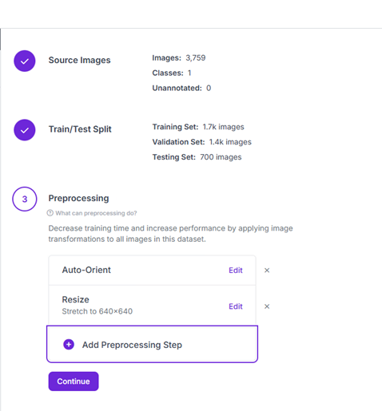
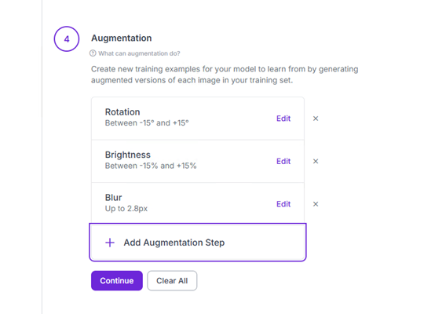

藝術史 <<
Previous Next >> RTET 看這邊
影像辨識
1.
動機：虎尾鎮曾經因為多次垃圾分類沒有分類好，導致垃圾被停運好幾次，其實有時候我自己也很懶得分類，我希望可以製作一個可以自動分類垃圾的垃圾桶。
預期目標：這次我會先以生活中常見的物品進行辨識，我希望他可以分辨常見的寶特瓶、鐵鋁罐、紙類，在和實體機構進行配合。
環境保護趨勢： 全球資源回收需求日益增加，但人工分類成本高且容易出錯。
技術結合： 結合深度學習（YOLO）與電腦視覺（OpenCV），實現自動化資源回收系統。
應用場景： 智慧垃圾桶原型。透過鏡頭自動辨識垃圾種類，導引至正確的回收桶。
2.
模型架構
3.使用工具及技術
第一階段
-
訓練環境： Google Colab (使用 T4 GPU 加速)。
-
訓練參數： Epochs=50, Imgsz=512。
-
推論環境： 本地 Windows 電腦、Miniconda 虛擬環境、OpenCV 影像串接。
第二階段
-
訓練環境： PVE虛擬機 (使用 GTX1070 GPU 加速)。
-
訓練參數： Epochs=50, Imgsz=512。
-
推論環境： 本地 Windows 電腦、Miniconda 虛擬環境、OpenCV 影像串接。
4.資料集準備
第一階段
-
資料來源： TACO Dataset（開源垃圾資料集）。
-
資料標註與合併： 使用 Roboflow 平台將 60 種細項分類合併為三大類：Plastic_Bottle (寶特瓶)、Can (鐵鋁罐)、Paper (紙類)。
-
資料增強 (Augmentation)： 加入旋轉 (Rotation)、模糊 (Blur) 等技術，模擬垃圾桶內複雜的光線與拍攝角度。
第二階段
5.製作過程紀錄
第一階段：失敗過程
我第一次採用taco內的資料集進行訓練寶特瓶、鐵鋁罐、紙類，訓練出來的圖表收斂的不錯，但是實際推理出來的效果不OK。
詢問AI後得知，其實圖表顯示出來模型訓練得很成功，不過推理出來的效果如下，辨識效果非常不理想。

下圖是我推理出來後的結果

在我反覆地訓練更多次模型、更換數據集、更換模型大小，實測出來的效果都非常的不理想。
並且剛好我的colab上限次數也用盡了，正當我反覆尋找問題時......
第二階段：重新來過
我在查看robo flow的過程中，我發現taco的數據集大部分是壓扁，形狀、外觀都沒有那麼原始的垃圾，所以第二階段我決定先專注訓練寶特瓶的模型。
首先我在Roboflow Universe 上面尋找到了一個寶特瓶的訓練集，總共3700多張照片，我把它fork回來我的workspace。

fork回來後我調整了一下預處理 (Preprocessing)，我設定了以下兩項

接下來我對照片進行數據增強 (Augmentation)，以下是我的設定

藝術史 <<
Previous Next >> RTET 看這邊